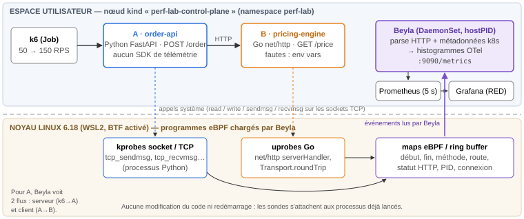
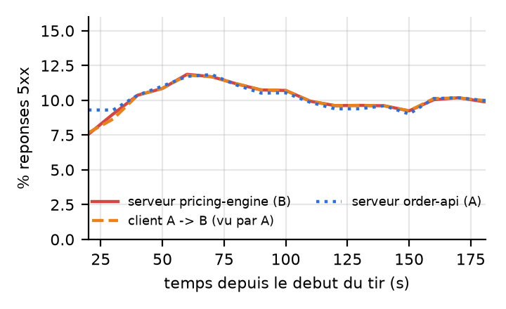
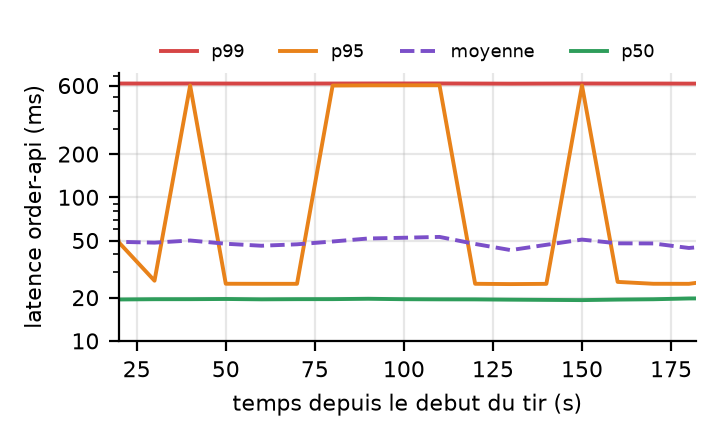
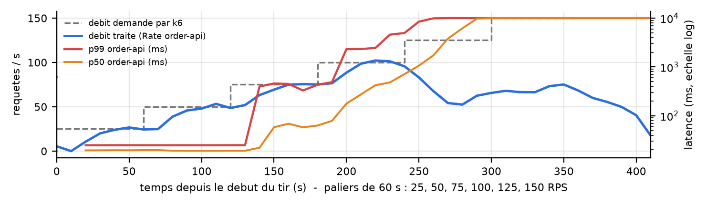
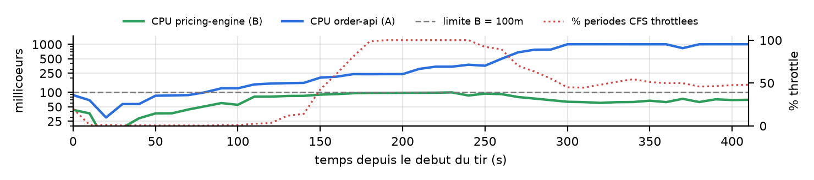
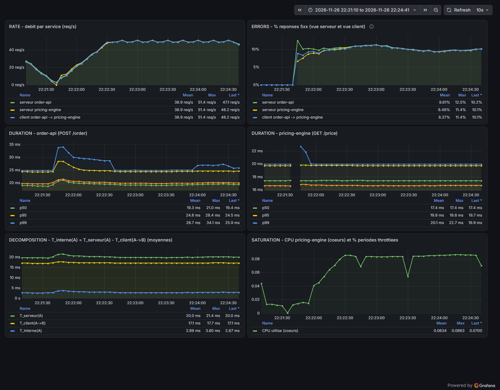
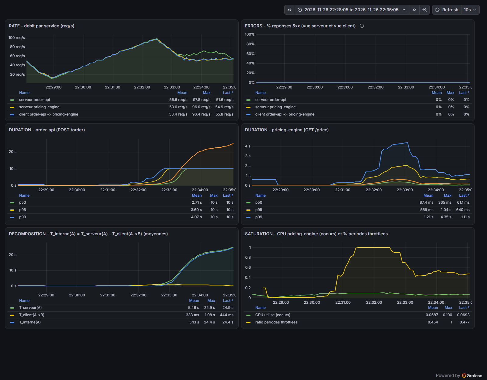

Nous avons mesuré les indicateurs RED (Rate, Errors, Duration) d'une chaîne synchrone
k6 → order-api (A) → pricing-engine (B) déployée sur Kubernetes, sans aucun SDK de télémétrie dans le code :
toutes les métriques sont produites par Grafana Beyla 3.43 (OpenTelemetry eBPF Instrumentation) à partir du noyau Linux.

Comment eBPF intercepte les requêtes. Beyla tourne en DaemonSet avec hostPID et les capacités
BPF, SYS_PTRACE, NET_ADMIN, PERFMON. Il repère les processus des Deployments
ciblés puis charge de petits programmes vérifiés par le noyau :
net/http du binaire (début et fin de traitement d'une requête).tcp_sendmsg, tcp_recvmsg…). Beyla lit les premiers octets, reconnaît le protocole HTTP et chronomètre
chaque échange. Il distingue ainsi les requêtes reçues par A (vue serveur) et celles qu'A émet vers B (vue client).service_name = nom du Deployment) et expose les histogrammes OpenTelemetry
http_server_request_duration_seconds et http_client_request_duration_seconds sur :9090/metrics.kind mono-nœud sur Docker Desktop (noyau WSL2 6.18, BTF activé, 12 vCPU),
namespace perf-lab, kube-prometheus-stack minimal (Alertmanager et node-exporter désactivés, collecte toutes les 5 s).GET /price) ;
B = Go net/http, 15 ± 2 ms de latence et 0,85 ms de CPU réel par requête. Fautes injectées par variables d'environnement
(ERROR_RATE, SLOW_RATIO, SLOW_LATENCY_MS).port-forward aurait ajouté sa propre latence.curl, /metrics affichait exactement
20 requêtes serveur sur /order, 20 sur /price et 20 requêtes client order-api → pricing-engine:8080.discovery.instrument sont des motifs glob et non des regex.
Notre premier filtre ^(order-api|pricing-engine)$ n'instrumentait rien. Nous avons aussi exclu les sondes
/health via http_route et ajouté des buckets fins (15–30 ms, 600–650 ms) pour des percentiles précis.Valeurs de bout en bout mesurées par k6 (côté client) et, en dessous, par Beyla/eBPF sur le serveur
order-api (fenêtre du tir, hors 10 premières secondes). Pour la saturation CPU, les chiffres couvrent toute la rampe 25 → 150 RPS.
| Régime | RPS | Moyenne | p50 | p95 | p99 | % erreurs |
|---|---|---|---|---|---|---|
| Nominal (50 RPS) | 50,0 | 20,2 ms | 20,0 ms | 23,2 ms | 23,9 ms | 0 % |
| Beyla – serveur A | 49,9 | 19,8 ms | 19,2 ms | 24,4 ms | 24,9 ms | 0 % |
| Injection d'erreurs (B : 10 % HTTP 500) | 50,0 | 20,4 ms | 20,0 ms | 23,6 ms | 26,1 ms | 10,2 % |
| Beyla – serveur A | 49,4 | 19,9 ms | 19,2 ms | 24,5 ms | 25,0 ms | 10,24 % |
| Tail latency (B : 5 % à 600 ms) | 49,9 | 48,5 ms | 20,1 ms | 25,8 ms | 605 ms | 0 % |
| Beyla – serveur A | 50,1 | 48,0 ms | 19,5 ms | 26,0 ms | 620 ms | 0 % |
| Saturation CPU (B limité à 100m, rampe) | 60,8 | 7,56 s | 561 ms | 30,0 s | 30,0 s | 15,8 %* |
| Beyla – serveur A | 62,3 | 7,42 s | 547 ms | ≥ 10 s** | ≥ 10 s** | 0 % |
* délais d'attente k6 (30 s) : aucune réponse 5xx côté serveur ; 7 497 requêtes n'ont même pas pu être émises (1 500 utilisateurs virtuels occupés).
** valeur bornée par le dernier bucket fini de l'histogramme (10 s) : histogram_quantile ne peut pas aller au-delà.
Fiabilité de la mesure eBPF. Sur les trois régimes stables, Beyla et k6 concordent à moins de 1 ms près sur la moyenne.
L'écart de 0,4 ms correspond au trajet réseau k6 → A. Le p99 « tail » vaut 620 ms côté Beyla contre 605 ms côté k6 :
c'est l'erreur d'interpolation linéaire de histogram_quantile à l'intérieur du bucket [600 ; 625 ms].
Nous utilisons les moyennes (_sum / _count) car elles sont additives. Les percentiles ne se soustraient pas :
le p99 de A et le p99 de son appel à B ne concernent pas forcément les mêmes requêtes.
| Moyennes mesurées par eBPF | Nominal | Erreurs 10 % | Tail latency | Palier 100 RPS (CPU) | Palier 150 RPS (CPU) |
|---|---|---|---|---|---|
Tserveur(A) – requête POST /order | 19,8 ms | 19,9 ms | 48,0 ms | 790 ms | 21 816 ms |
| Tclient(A → B) – appel vu par A | 17,0 ms | 17,1 ms | 45,1 ms | 784 ms | 419 ms |
| Tinterne(A) = différence | 2,8 ms | 2,8 ms | 2,9 ms | 6 ms | 21 397 ms |
Tserveur(B) – GET /price | 16,6 ms | 16,7 ms | 44,6 ms | 522 ms | 133 ms |
| Réseau + pile HTTP + attente A↔B = Tclient(A→B) − Tserveur(B) | 0,4 ms | 0,4 ms | 0,5 ms | 262 ms | 286 ms |

ERROR_RATE=0.10 sur B.Avec 10 % d'erreurs injectées dans B, les trois courbes se superposent :
| Vue eBPF | % 5xx |
|---|---|
| Serveur pricing-engine (B) | 10,25 % |
| Client order-api → pricing-engine | 10,25 % |
| Serveur order-api (A) | 10,24 % |
| Vu par l'utilisateur (k6) | 10,21 % |
A n'ajoute aucune erreur : elle transforme chaque 500 reçu en 502 renvoyé.
Comment isoler le fautif. Pour chaque service, on compare ses erreurs serveur (ce qu'il renvoie) à ses erreurs client (ce qu'il reçoit de ses dépendances). Pour A, les deux taux sont égaux : A ne fait que propager. Pour B, les erreurs serveur ne sont expliquées par aucun appel sortant : B est la source. Comme Beyla mesure les deux côtés de chaque connexion sans instrumentation manuelle, ce raisonnement se lit directement dans Grafana, sans fouiller les journaux ni modifier le code. On peut aussi suivre la chaîne de proche en proche sur un graphe plus long.

| order-api (k6) | Nominal | Tail |
|---|---|---|
| p50 | 20,0 ms | 20,1 ms |
| p95 | 23,2 ms | 25,8 ms |
| p99 | 23,9 ms | 605 ms |
| Moyenne | 20,2 ms | 48,5 ms |
| Maximum | 37,8 ms | 608 ms |
Le p50 n'a pas bougé (+0,1 ms) alors que le p99 a été multiplié par 25.
Pourquoi le p50 reste vers 20 ms. Un percentile est un rang, pas une moyenne. Trions les 9 000 requêtes par durée : les 95 % premières (≈ 8 550) sont rapides, à 17,5 ms dans B + 2,9 ms dans A ≈ 20 ms. Le p50 (rang 4 500) et même le p90 tombent dans ce groupe : les 5 % de requêtes lentes ne les influencent pas. Le p99 (rang 8 910) tombe au contraire dans le groupe lent et vaut donc ≈ 600 ms + 20 ms. Le p95 est pile à la frontière (rang 8 550) : il oscille entre 26 ms et 600 ms selon la fenêtre (Figure 3). C'est un signal classique d'une population bimodale.
Pourquoi la moyenne trompe. Moyenne théorique ≈ 0,95 × 20 + 0,05 × 620 = 19 + 31 = 50 ms (mesuré : 48,5 ms). Elle décrit un utilisateur à 48 ms qui n'existe pas : 19 utilisateurs sur 20 attendent 20 ms, et 1 sur 20 attend ≈ 605 ms, soit 30 fois plus. Un tableau de bord fondé sur la moyenne afficherait une hausse modérée (×2,4) et masquerait une expérience 30 fois pire pour 5 % des clients. L'effet s'amplifie en microservices : une page qui déclenche 10 appels de ce type a 1 − 0,9510 ≈ 40 % de chances de subir au moins une requête lente. Les SLO doivent donc porter sur p95/p99.


| Palier k6 | Débit traité | Moy. A | p99 A | CPU B | B bridé | CPU A | L = λ·W (en vol) |
|---|---|---|---|---|---|---|---|
| 25 RPS | 24,6 | 20 ms | 25 ms | 37m | 1 % | 86m | 0,5 |
| 50 RPS | 49,1 | 20 ms | 25 ms | 82m | 3 % | 153m | 1,0 |
| 75 RPS | 76,0 | 93 ms | 417 ms | 97m | 99 % | 239m | 7 |
| 100 RPS | 95,6 (max 104) | 790 ms | 4,7 s | 86m | 100 % | 377m | 76 |
| 125 RPS | 61,9 | 13,3 s | ≥ 10 s | 64m | 45 % | 1 003m | 821 |
| 150 RPS | 68,1 | 21,8 s | ≥ 10 s | 63m | 50 % | 1 002m | 1 485 |
Point d'inflexion. Jusqu'à 50 RPS, le débit suit la demande et la latence reste plate (20 ms). À 75 RPS, B atteint sa limite (97m consommés, 99 % des périodes CFS bridées) : le débit suit encore, mais le p99 passe de 25 à 417 ms. Le coude se situe entre 75 et 100 RPS : le débit plafonne à ≈ 100 RPS (95,6 en moyenne, 104 au pic), soit la capacité théorique de 100 ms CPU/s ÷ ≈ 1 ms CPU par requête, tandis que la latence moyenne est multipliée par 40 (20 → 790 ms). Au-delà, le système s'effondre : le débit redescend à 62–68 RPS, la latence atteint 22 s et k6 abandonne 15,8 % des requêtes à 30 s.
File d'attente et loi de Little (L = λ · W : requêtes en cours = débit × temps de séjour). Tant que λ reste
sous la capacité μ, la file est vide et W ≈ temps de service. Quand ρ = λ/μ tend vers 1, l'attente croît en 1/(1 − ρ) (M/M/1) :
c'est la « crosse de hockey ». Si λ > μ, la file grossit sans limite d'environ (λ − μ) requêtes par seconde. Mesuré :
L = 1 → 7 → 76 → 821 → 1 485 requêtes en vol, bloqué par le plafond de 1 500 utilisateurs virtuels de k6.
Vérification indépendante : avec L = 1 500 et λ = 68 req/s, Little prédit W = 1 500 / 68 ≈ 22 s ; nous mesurons 21,8 s.
La latence n'est plus fixée par le service mais par la longueur de la file.
Sans une ligne de code d'instrumentation, Beyla a fourni des métriques RED fiables (écart < 1 ms avec k6), en vue serveur et client, pour un service Python et un service Go. Trois règles en ressortent : piloter par les percentiles (le p99 a révélé ce que la moyenne cachait), lire Rate et Duration ensemble pour trouver le coude de saturation, et rester loin de ρ = 1.
grafana/dashboard-red.json)
